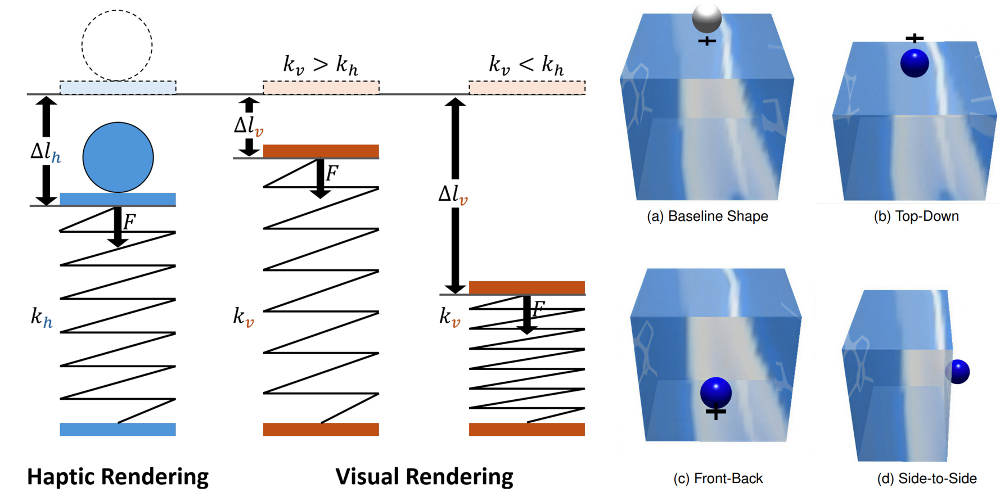
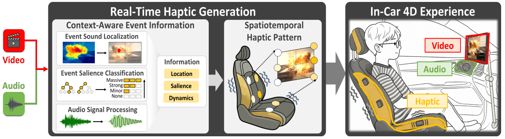

Submitted
Manuscript submitted
IEEE VR'27 Submitted
Research topic
General Egocentric Direction
IEEE Conference on Virtual Reality and 3D User Interfaces (IEEE VR), 2027
No papers in this category.
Research topic
Research topic
Research topic

@article{Jung26Compliance,
title = {{Perceiving Compliance in Virtual Reality: Effects of Interaction Direction and Sensory Discrepancy on Visuo-Haptic Weighting}},
author = {Jung, Taehyeong and Lee, Jiwan and Kim, Junwoo and Choi, Seungmoon},
journal = {IEEE Transactions on Visualization and Computer Graphics},
year = {2026},
publisher = {IEEE},
note = {To appear; IEEE ISMAR 2026}
}Provisional citation · To appear

@inproceedings{Kim26CineHaptic,
title = {{CineHaptic: Context-Aware Real-Time Audiovisual-to-Haptic Rendering System for In-Vehicle 4D Cinematic Experiences}},
author = {Kim, Junwoo and Kim, Hyunuk and Oh, Hyun-Bin and Kang, Jeonggoo and Oh, Tae-Hyun and Choi, Seungmoon},
booktitle = {Proceedings of the ACM Symposium on User Interface Software and Technology},
year = {2026},
publisher = {Association for Computing Machinery},
note = {To appear}
}Provisional citation · To appear

@ARTICLE{Kim26Egocentric,
author={Kim, Junwoo and Park, Jaejun and Park, Chaeyong and Park, Junseok and Choi, Seungmoon},
journal={IEEE Transactions on Haptics},
title={Representing Egocentric Directions with Torso-Applied Vibrotactile Stimuli},
year={2026},
volume={19},
number={2},
pages={249-261},
doi={10.1109/TOH.2026.3667214}}BibTeX: IEEE Xplore · Cite This

@InProceedings{Kim25Azimuth,
doi={10.1007/978-3-031-70058-3_1},
author="Kim, Junwoo
and Park, Jaejun
and Park, Chaeyong
and Park, Junseok
and Choi, Seungmoon",
editor="Kajimoto, Hiroyuki
and Lopes, Pedro
and Pacchierotti, Claudio
and Basdogan, Cagatay
and Gori, Monica
and Lemaire-Semail, Betty
and Marchal, Maud",
title="Human Identification Performance of Vibrotactile Stimuli Applied on the Torso Along Azimuth or Elevation",
booktitle="Haptics: Understanding Touch; Technology and Systems; Applications and Interaction",
year="2025",
publisher="Springer Nature Switzerland",
address="Cham",
pages="3--15",
isbn="978-3-031-70058-3"
}
@ARTICLE{Lee24Telemetry,
author={Lee, Jiwan and Kim, Junwoo and Kang, Jeonggoo and Jo, Eunsoo and Park, Dong Chul and Choi, Seungmoon},
journal={IEEE Transactions on Haptics},
title={Telemetry-Based Haptic Rendering for Racing Game Experience Improvement},
year={2024},
volume={17},
number={1},
pages={72-79},
doi={10.1109/TOH.2024.3357885}}BibTeX: IEEE Xplore · Cite This

@INPROCEEDINGS{Park23FullBody,
author={Park, Jaejun and Kim, Junwoo and Han, Sangyoon and Park, Chaeyong and Park, Junseok and Choi, Seungmoon},
booktitle={2023 IEEE World Haptics Conference (WHC)},
title={Information Transfer of Full-Body Vibrotactile Stimuli: An Initial Study with One to Three Sequential Vibrations},
year={2023},
volume={},
number={},
pages={41-47},
doi={10.1109/WHC56415.2023.10224391}}BibTeX: IEEE Xplore · Cite This

@INPROCEEDINGS{Kim23Patterns,
author={Kim, Junwoo and Kim, Heeyeon and Park, Chaeyong and Choi, Seungmoon},
booktitle={2023 IEEE World Haptics Conference (WHC)},
title={Human Recognition Performance of Simple Spatial Vibrotactile Patterns on the Torso},
year={2023},
volume={},
number={},
pages={20-27},
doi={10.1109/WHC56415.2023.10224430}}BibTeX: IEEE Xplore · Cite This